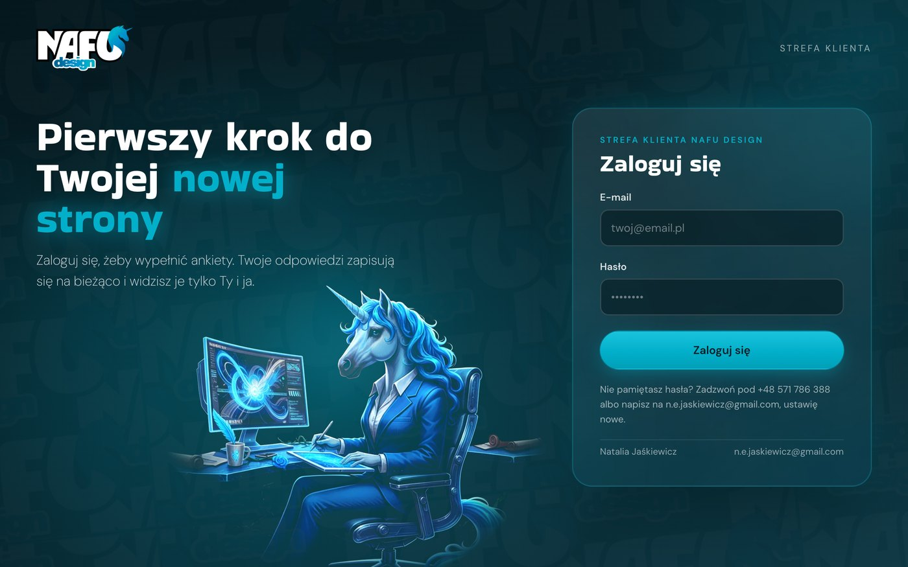
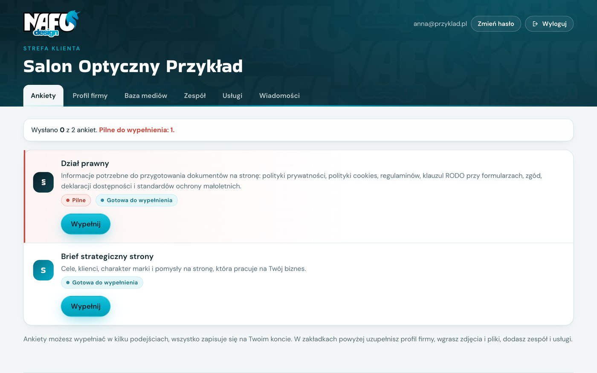
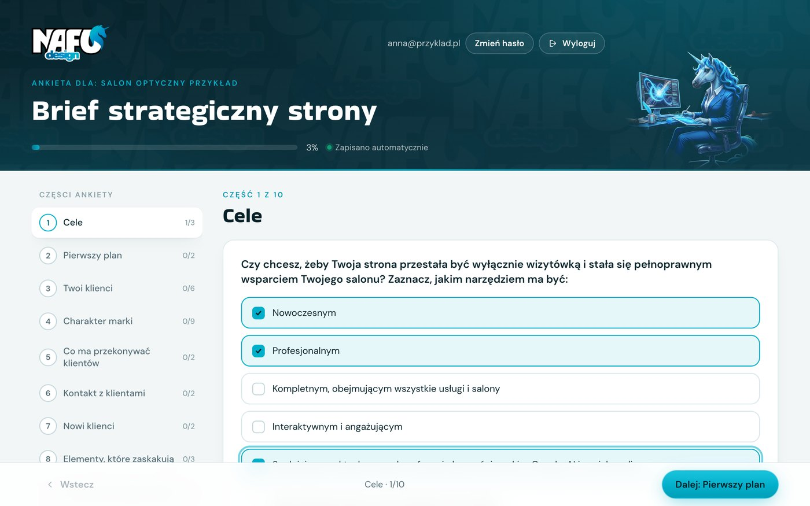
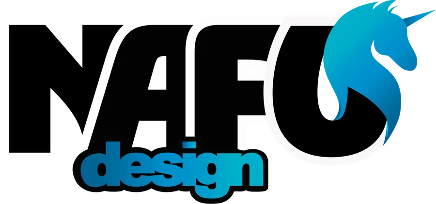

Strefa klienta · krótki poradnik
Pierwszy krok do Twojej nowej strony
W strefie klienta wypełnisz ankiety do projektu i przekażesz mi wszystkie potrzebne materiały. Wszystko w jednym miejscu, zapisywane na bieżąco. Zajmie Ci to mniej czasu, niż myślisz.
1
Zaloguj się
Wejdź na nafu-design.com/logowanie i wpisz e-mail oraz hasło z mojej wiadomości.
Przy pierwszym logowaniu ustawisz własne hasło (co najmniej 8 znaków). Tylko Ty będziesz je znać.

2
Wybierz ankietę
Po zalogowaniu zobaczysz listę ankiet przygotowanych dla Ciebie.
- Ankiety oznaczone Pilne wypełnij w pierwszej kolejności.
- Kliknij Wypełnij, a przy rozpoczętej ankiecie Kontynuuj.
- Wysłane ankiety mają status Wysłana.

3
Odpowiadaj w swoim tempie
- Większość pytań to zaznaczanie, pod pytaniami są podpowiedzi.
- Odpowiedzi zapisują się same. Możesz przerwać i wrócić później.
- Czego nie wiesz, zostaw puste. Omówimy to razem.
- Na koniec kliknij Sprawdź i wyślij. Chcesz potem coś poprawić? Napisz, odblokuję ankietę.


Strefa klienta · krótki poradnik
4
Uzupełnij pozostałe zakładki
U góry strony znajdziesz zakładki. Dzięki nim nie musisz wysyłać mi niczego mailem, a ja od razu mam wszystko pod ręką.
PProfil firmy
Dane firmy i do faktury, osoba do kontaktu, salony z adresami i godzinami otwarcia, strona i social media. Jeśli masz kilka firm, dodaj każdą osobno. Na koniec kliknij Zapisz.
MBaza mediów
Przeciągnij albo wybierz zdjęcia, filmy, logo i dokumenty. Wybierz kategorię, np. „Zdjęcia salonu”. Plik może mieć do 50 MB, większe filmy dodaj jako link.
ZZespół
Dodaj osoby z zespołu: zdjęcie, stanowisko, kilka słów o sobie, kwalifikacje, godziny pracy w salonach oraz certyfikaty i dyplomy.
UUsługi
Wpisz usługi z ceną i czasem trwania oraz zaznacz salony, w których są dostępne. Osobno decydujesz, co widać na stronie, a co w kalendarzu rezerwacji.
WWiadomości
Masz pytanie albo chcesz coś szybko przekazać? Napisz tutaj i w razie potrzeby załącz plik. Odpowiem najszybciej, jak to możliwe, a cała rozmowa zostaje w jednym miejscu.
5
Warto wiedzieć
- Strefa klienta działa także na telefonie i tablecie.
- Twoje odpowiedzi i pliki widzimy tylko Ty i ja. Bez logowania nikt ich nie zobaczy.
- Zmień hasło i Wyloguj znajdziesz w prawym górnym rogu.
- Nie wpisuj w ankietach haseł ani danych swoich klientów.
- Nie pamiętasz hasła? Zadzwoń lub napisz, ustawię nowe.